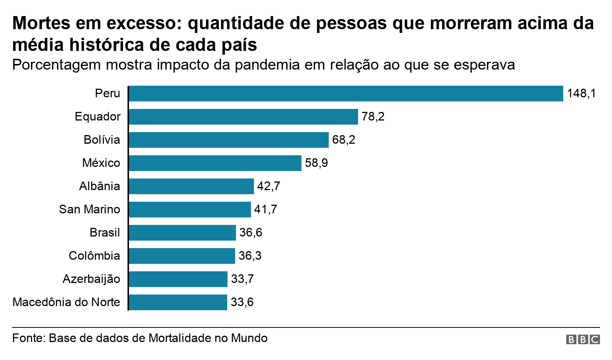
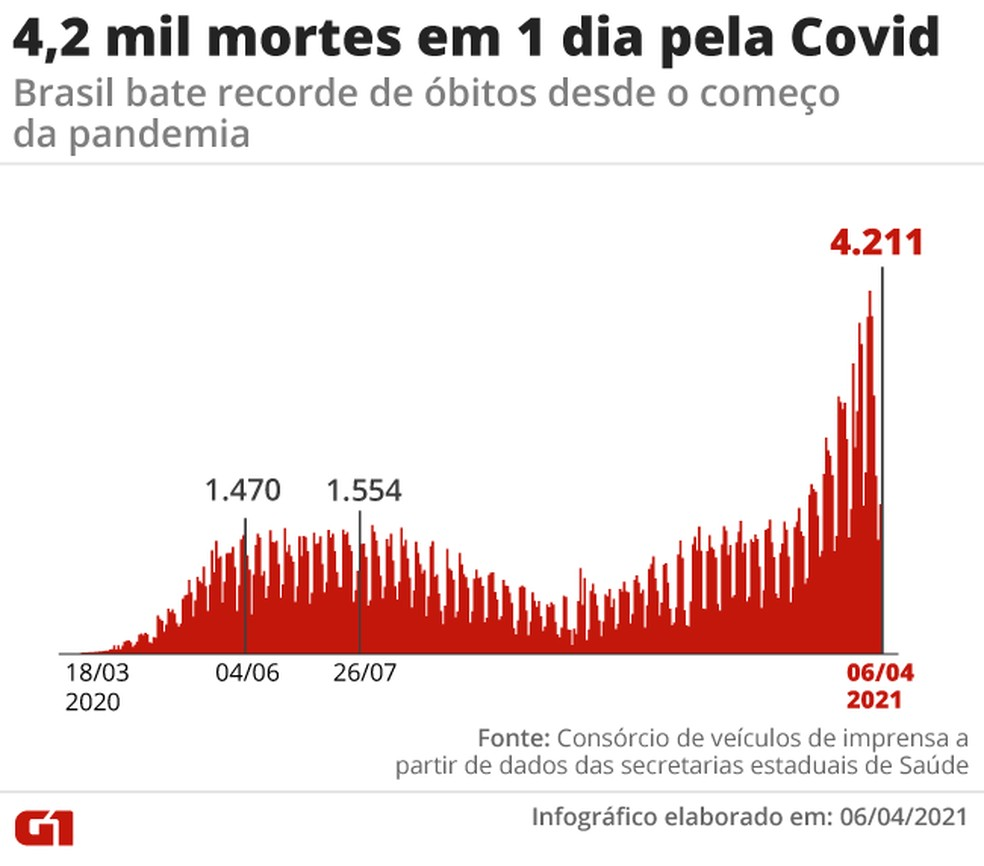

Em 2020 o Vírus do Covid-19 deixou o mundo todo apavorado com os números de mortes,
já que como era uma doença nova, ninguém sabia a cura. Já agora em 2021 a vacina foi
mundialmente desponibilizada. E até agora muitos já foram imunizados, mas com a nova crescente
de casos de covid no Brasil, devemos revisar como se prevenir ao vírus, desde ações que podemos
evitar, como ocorre a transmissão, como países estão lidando com isso, números de
vacinação e até mesmo indentificação de sintomas. Tudo para melhorar a conscientização do vírus.
O Brasil totaliza 30% dos mortos pela covid no mundo todo, sendo que o próprio abriga 2,7% da população mundial.
E com a nova onda do vírus, o Brasil sofreu bastante, com diversas novas pessoas sendo afetadas pelos sintomas
da doença, além do crescente número de mortos e infectados pelo coronavírus, isso tudo mesmo com a vacinação da população.
Em vários países do mundo hoje em dia, as pessoas já conseguem ir a diversos lugares sem o uso de máscara
ou álcool em gel, isso no Brasil é uma realidade bem distante, mas mesmo assim podemos ver que a vacina tá
fazendo a diferença e daqui há algum tempo poderemos também ir aos Shoppings, Estádios, Restaurantes, Hospitais,
e etc sem máscara, ou seja, de forma normal.
Agora veja o gráfico que mostra os mortos comparando com a média histórica de cada país

O vírus que causa a COVID-19 é transmitido principalmente por meio de gotículas geradas quando uma
pessoa infectada tosse, espirra ou exala. Essas gotículas geralmente permanecem depositadas em
pisos ou superfícies. Você pode ser infectado ao inalar o vírus se estiver próximo de alguém
que tenha COVID-19 ou ao tocar em uma superfície contaminada e, em seguida, passar as mãos nos olhos,
nariz ou na boca.

| Como se Prevenir? |
| Como Saber se Estou com Covid 19? |
>
São perguntas frequentes que podem ser respondidas de forma bem fácil, até porque já é da
sabedoria de muitas pessoas, mas mesmo assim é sempre bom lembrar.
TRANSMISSÃO
O vírus que causa a COVID-19 é transmitido principalmente por
meio de gotículas geradas quando uma pessoa infectada tosse, espirra ou exala.
Essas gotículas geralmente permanecem depositadas em pisos ou superfícies.
Você pode ser infectado ao inalar o vírus se estiver próximo de alguém que
tenha COVID-19 ou ao tocar em uma superfície contaminada e, em seguida, passar
as mãos nos olhos, no nariz ou na boca.
FORMAS DE PREVENÇÃO
.Evitar contato com pessoas doentes
.Evitar tocar nos olhos, nariz, e boca
.Lavar frequentemente as mãos com água e sabão
.Usar álcool em gel
.Limpar e desinfectar objetos e superfícies
.Ficar em casa, principalmente quando estiver doente
PRINCIPAIS SINTOMAS
.Febre
.Tosse
.Congestão Nasal
VACINA
VACINA:
Uma das vacinas mais famosas é a CoronaVac, vacina contra o novo coronavírus produzida pelo laboratório chinês Sinovac Biotech, e testada no Brasil pelo Instituto Butantan, segue um padrão diferente das vacinas da Pfizer e da AstraZeneca e foi criada com base no próprio vírus inativado, estratégia mais comum para imunizantes.
O Vírus da Covid 19 é letal, e bem pior se tiver alguma comobirdade (Diabetes, Asma, Hipertensão e Etc),
então se cuide, e se previna dessa horrível doença.
Trabalho feito por Caio André e Eline Nascimento - Grupo 4